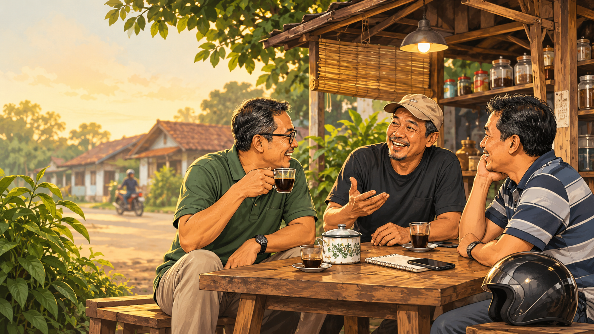

Catatan kehidupan
Menjadi Bapak-Bapak: Ketika Semua Orang Butuh Jawaban
Ternyata menjadi dewasa bukan berarti punya semua jawaban. Kadang kita hanya lebih berpengalaman dalam menyembunyikan kepanikan.
Baca ceritanya →Tempat mampir, sambat, sebat, dan bertukar pikiran. Tidak harus paling pintar, paling sukses, atau paling benar. Sing penting gelem mikir, gelem ngguyu, lan ora mandheg sinau.

Kadang butuh solusi, kadang cuma butuh teman ngobrol. Di sini, dua-duanya punya tempat.
Ternyata menjadi dewasa bukan berarti punya semua jawaban. Kadang kita hanya lebih berpengalaman dalam menyembunyikan kepanikan.
Baca ceritanya →Pengetahuan praktis, teknologi, kerja, dan keterampilan yang bisa dibawa pulang.
Jelajahi artikel →Obrolan keseharian yang kadang lucu, kadang getir, tetapi dekat dengan hidup kita.
Monggo cangkrukan →Bukan cuma soal kopi dan rokok. Pikiran bapak-bapak ternyata punya banyak tab yang masih terbuka.
Kehidupan, keluarga, pekerjaan, dan hal-hal yang sering kita alami.
Ilmu praktis, teknologi, produktivitas, dan cara kerja yang lebih baik.
Literasi keuangan, karier, anggaran, dan keputusan sehari-hari.
Fenomena sosial, perubahan zaman, dan pemikiran kritis.
Menertawakan ironi kehidupan tanpa merendahkan orang lain.
Pengalaman, kegagalan, pilihan, dan proses menjadi lebih dewasa.
PAKWK.ONLINE · Ruang berbagi tanpa menggurui dan menghakimi.
Tentang tanggung jawab, kepanikan yang disimpan, dan belajar mengakui bahwa kita juga sedang mencari jawaban.
Baca artikel →Sebuah misteri rumah tangga yang mungkin lebih rumit daripada mencari sinyal di tengah hutan.
Jelajahi topik →Cara memanfaatkan kecerdasan buatan tanpa menyerahkan seluruh isi kepala kepadanya.
Jelajahi topik →